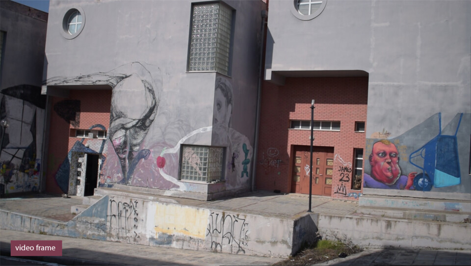
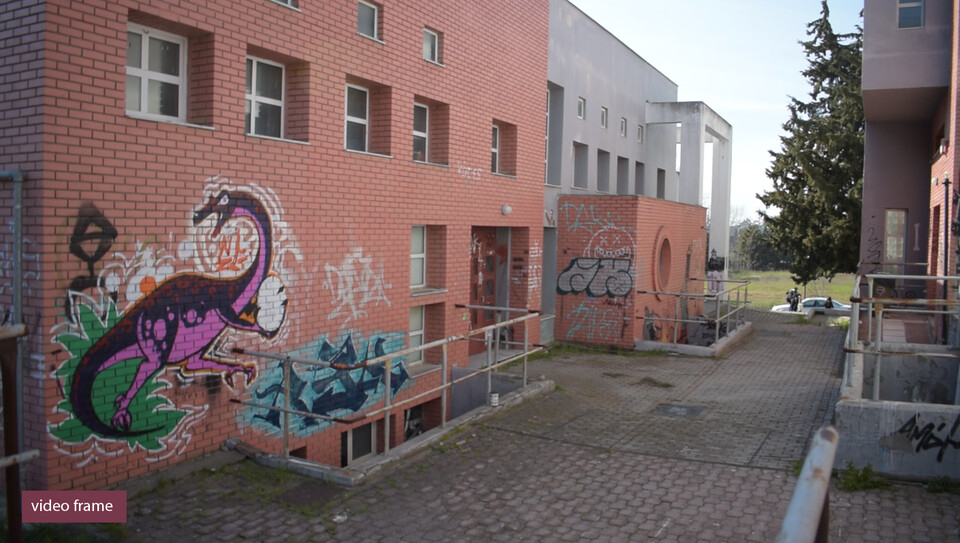
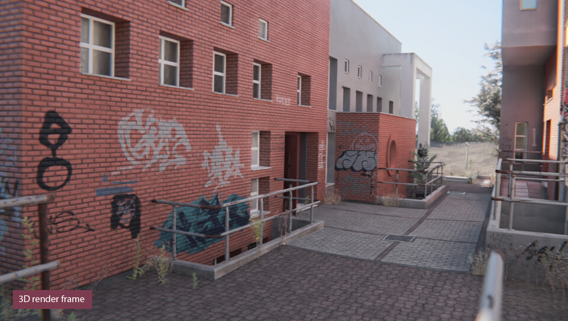
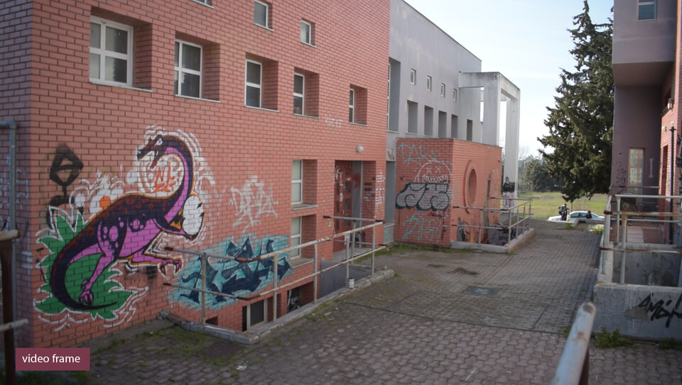
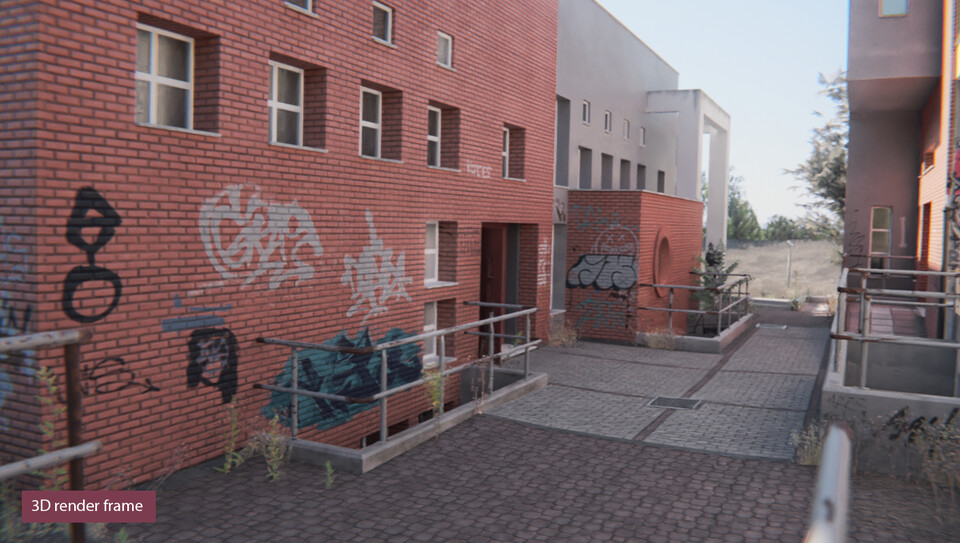

- Έτος - 2020
- Διάρκεια της εγκατάστασης - 5 ώρες
- Επιβλέπων Καθηγητής - Χαράλαμπος Βενετόπουλος
- Υπέυθυνος Καθηγητής - Γεώργιος Τσακίρης
- Λογισμικά που χρησιμοποιήθηκαν
- Unity & Photon - Game engine και Multiplayer framework
- Visual Studio - Συγγραφή κώδικα
- Blender 3D - Μοντελοποίηση και στήσιμο
- Adobe Photoshop - Υλικά
- Substance Painter - Υλικά
- Davinci Resolve, Adobe After Effects - Παρουσίαση
- Adobe InDesign - Στήσιμο καταλόγων
Η πτυχιακή μου εργασία στο τμήμα Εικαστικών και Εφαρμοσμένων Τεχνών ήταν ένα 3D βιντεοπαιχνίδι δύο παικτών. Το βιντεοπαιχνίδι εξελίσσεται σε έναν εικονικό κόσμο που μιμείται τον χώρο του τρίτου εργαστηρίου ζωγραφικής και η περιήγηση γίνεται μέσα από τα μάτια του εκάστοτε παίκτη. Εκεί υπάρχει η δυνατότητα να ζωγραφίζει, να κάνει κατασκευές, να συνθέτει κείμενα και να κάνει διάλειμμα, όπου μπορεί να επικοινωνήσει με τον άλλο παίκτη μέσω μικροφώνου. Οι λειτουργίες εναλλάσσονται βάσει ενός εσωτερικού χρονομέτρου.
Μια σύντομη τεχνική ανάλυση της εργασίας - 02:36
H εργασία, με τη μορφή διαδραστικής εγκατάστασης, επιχειρεί να εγείρει προβληματισμούς σχετικά με τους εξωτερικούς αλλά και εσωτερικευμένους παράγοντες που επηρεάζουν και ορίζουν την δημιουργική διαδικασία. Έχοντας υπάρξει φοιτητής σε μία σχολή καλών τεχνών και στο συγκεκριμένο εργαστήριο αποφάσισα να αναδείξω κάποιες από τις όψεις του βιώματος της φοίτησης στον χώρο, όπως τις έχω αντιληφθεί μέσα από ένα κολάζ συζητήσεων και ιστοριών από συμφοιτητές και αποφοίτους, σε συνδυασμό με την προσωπική μου εμπειρία.
Η ίδια η επιλογή με την συστηματική ενασχόληση με την εικαστική δημιουργία, κατασκευάζει έναν ρόλο φορτισμένο κοινωνικά και ιστορικά. Τον ρόλο του καλλιτέχνη. Αυτός σε συνδυασμό με την θέση του πανεπιστημίου στην κοινωνία ορίζει το άτομο ως μονάδα παραγωγής. Και καθώς αυτός ο ρόλος εσωτερικεύεται, η διεκπεραιωτική αντιμετώπιση της εικαστικής δημιουργίας καταλήγει η πιο εύκολη επιλογή. Γίνεται μία ακόμα υποχρέωση ανταγωνιστική με τις υπόλοιπες υποχρεώσεις για την κοινωνική αναπαραγωγή και οικονομική ανέλιξη του ατόμου. Γίνεται εν τέλει, κάτι χρονομετρήσιμο. Σε αυτά τα πλαίσια όπου η ατομική προσπάθεια φαίνεται η μόνη που αποδίδει καρπούς, η επικοινωνία φαντάζει αχρείαστη, ενώ ο ελεύθερος χρόνος μετατρέπεται σε νεκρό ενδιάμεσο χρόνο.
Ο χώρος που συνδέει αυτές τις παρατηρήσεις είναι ο χώρος που επέλεξα να ανασκευάσω. Καθώς συνδεόμαστε κιναισθητικά και με τον χώρο και αποδίδουμε σε αυτόν τις εμπειρίες μας ο χώρος είναι μέρος του βιώματος όσο το βίωμα είναι μέρος του χώρου.¹
Ο βασικός λόγος που επέλεξα την 3d αναπαράσταση ήταν ομολογουμένως η τεχνική πρόκληση της δημιουργίας ενός ολόκληρου κτιρίου και της διαχείρισης του όγκου πληροφορίας που δημιουργεί η διαδικασία με τρόπο ώστε να μπορεί να λειτουργεί σε πραγματικό χρόνο αλλά και να μην αποκλίνει σε μεγάλο βαθμό από την πραγματικότητα. Ένας ακόμα λόγος ήταν η δυνατότητα προγραμματισμού δικτυωμένης διάδρασης μεταξύ παικτών. Η δικτύωση, οσο καταρρίπτει τις αποστάσεις τείνοντας να καταργήσει την υλικότητα του χώρου, άλλο τόσο δημιουργεί χώρους², οι οποίοι με τη σειρά τους έχουν υλικές επιπτώσεις.
1. Τον 19ο αιώνα διατυπώνεται σαφώς αυτή η άποψη μέσα από την θεωρητική διαμάχη που αργότερα ονομάστηκε "Νεο-Καντιανή διαμάχη για την φύση του χώρου".
Τερζόγλου, Ν. Ι. (2009). Ιδέες του χώρου στον εικοστό αιώνα. Αθήνα, εκδόσεις νήσος.
2. Beaude, B. (2016). The Ends of the Internet. Amsterdam: Institute of Network Cultures.
Οι κατάλογοι της έκθεσης.
 



Μερικές συγκρίσεις μεταξύ φωτογραφιών και render.


Φωτογραφίες από την εγκατάσταση.